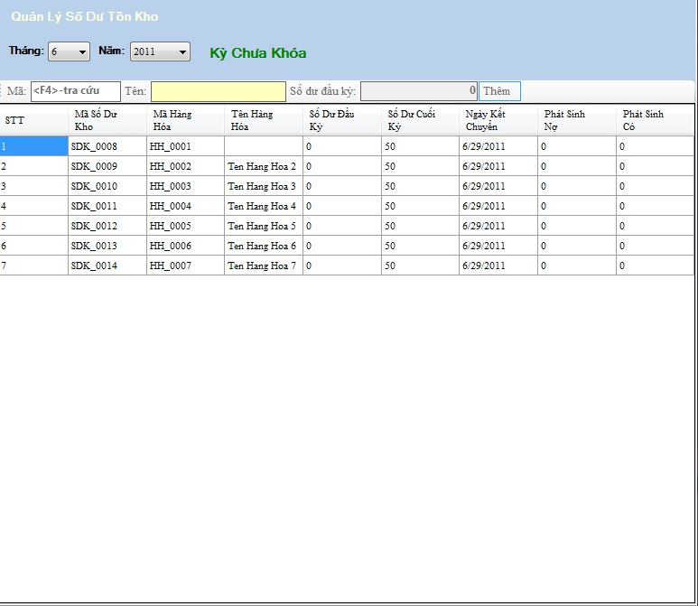

Cách thao tác với quản lý nhập số dư tồn kho đầu kỳ
Vào Hệ thống ->Nhập số dư tồn kho đầu kỳ

Thanh tiêu đề: Chứa tên của danh mục đang làm việc.
- Chọn kỳ thực hiện
- Dữ liệu của nhập số dư tồn kho sẽ được hiển thị trong bảng dưới.
- Chọn Trở về để trở lại Danh mục quản lý .